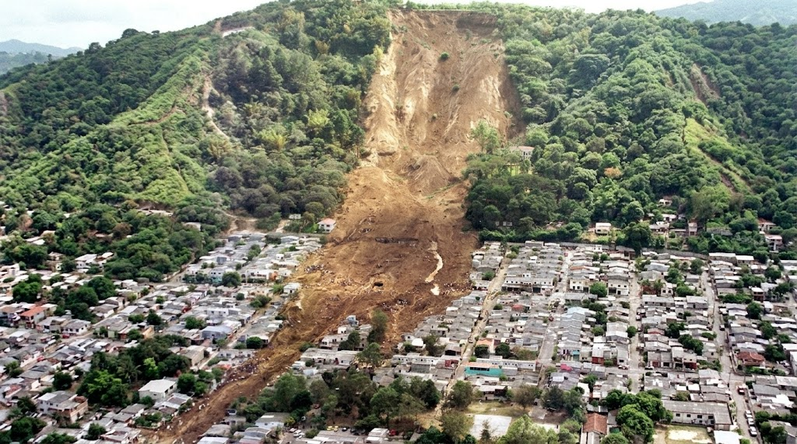
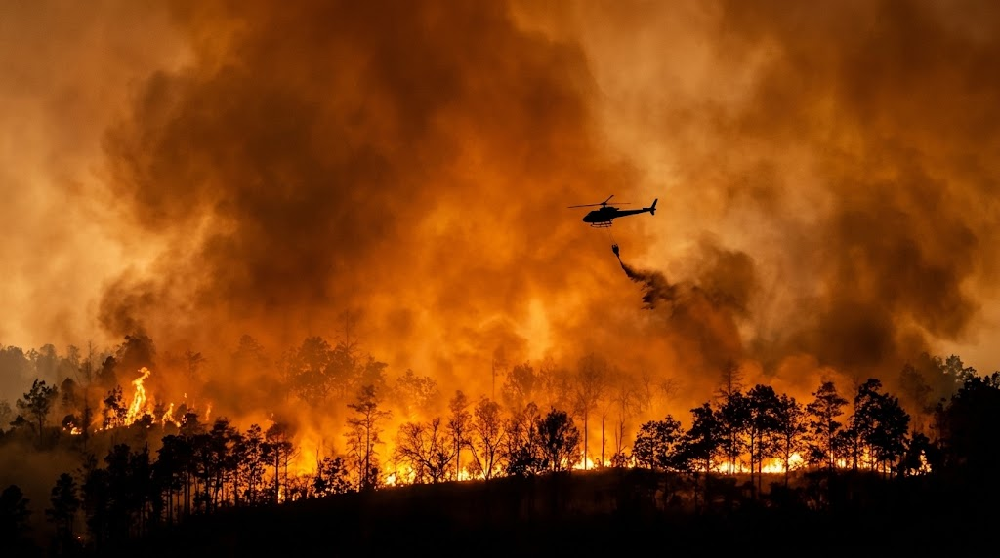
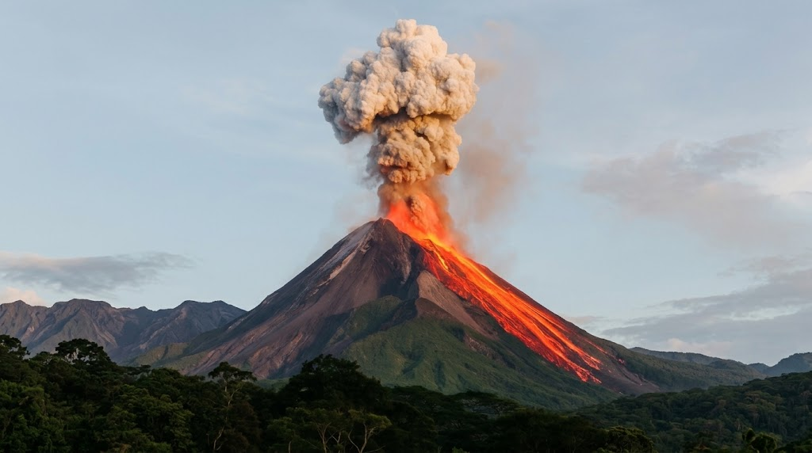
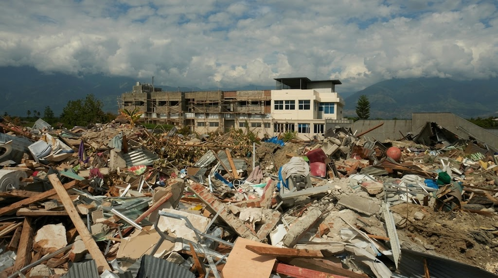
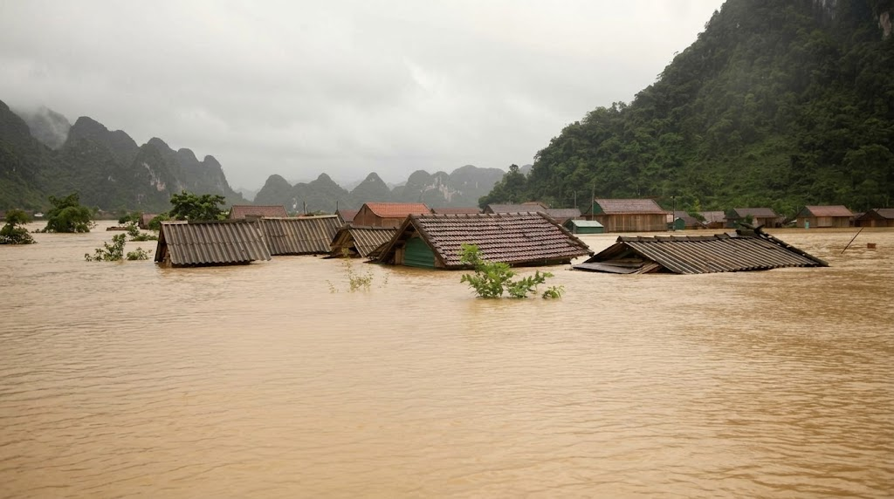
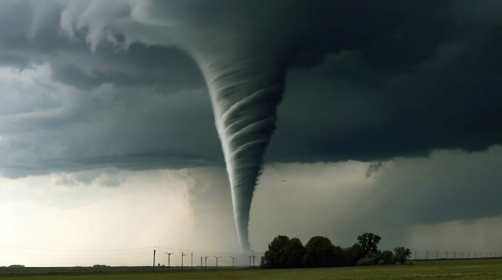
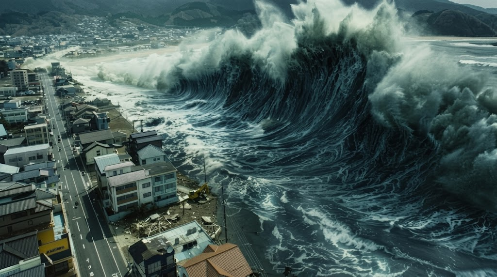

SELAMAT DATANG DI PORTAL SIAGA BENCANA & EDUKASI MITIGASI







Indonesia berada di jalur Cincin Api Pasifik (Ring of Fire), yang membuatnya rawan terhadap berbagai jenis bencana alam. Portal ini hadir sebagai panduan kesiapsiagaan untuk membantu Anda dan keluarga tetap aman sebelum, saat, dan setelah bencana terjadi.